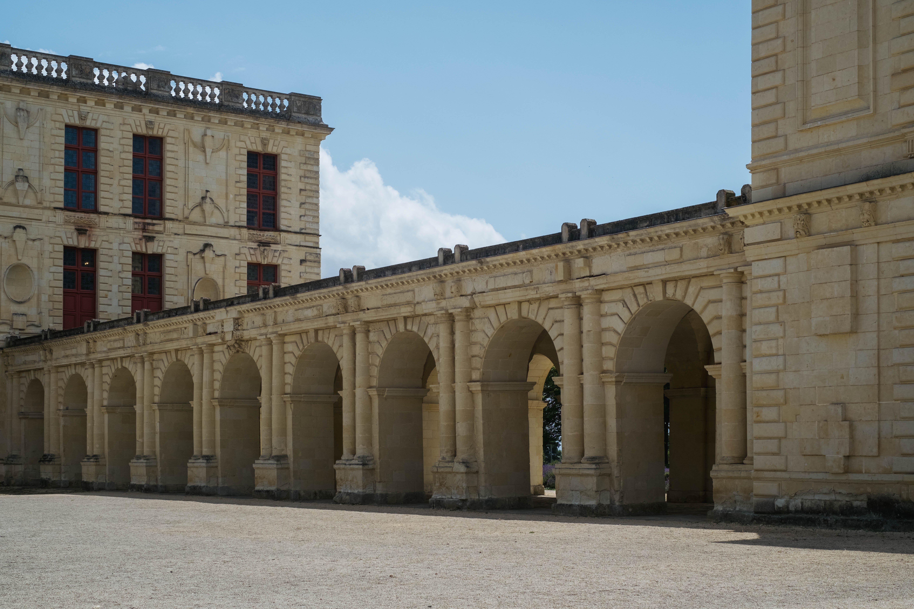
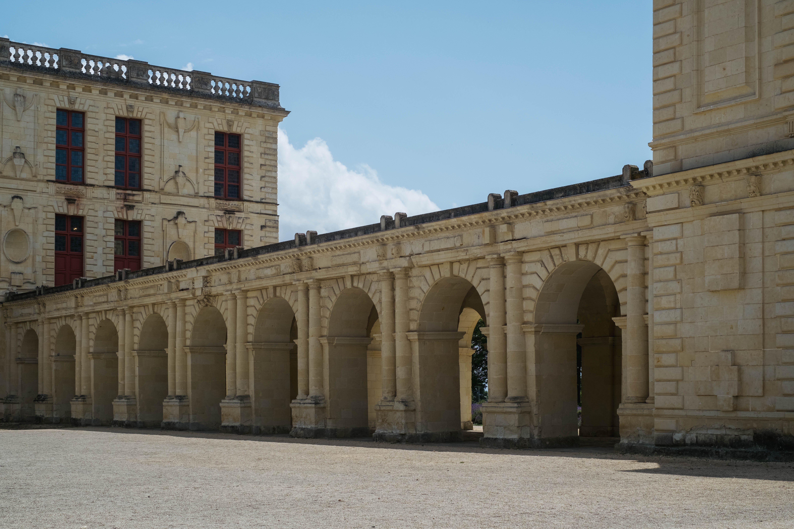

01. Dawn // The Blue Hour
- Light
- Diffused, grey
- Body
- Warm, waiting
The air felt heavier than usual.


- Light
- Blue
- Body
- Still
I kept this because the silence felt exactly like the library I used to study in.


- Light
- Rising
- Body
- Walking
02. Morning // Sharp Shadows

- Light
- Hard
- Body
- Passing
2023 Just a shadow study.
2025 Looking back, this geometry defines my current work.

- Light
- Interior, warm
- Body
- Sitting


- Light
- Warm
- Body
- Resting
03. Day // High Contrast

- Light
- Exposed
- Body
- Squinting
Too bright to look at directly, but I needed to remember the heat.
( Overexposed )


- Light
- Metallic
- Body
- Moving
 

- Light
- Moving
- Body
- Walking
04. Night // The Void

- Light
- Neon
- Body
- Tired


- Light
- Black
- Audio
- Silence
Such a small light in the room was almost joyful.